Commercial prioritization and forecasting from sales opportunity data
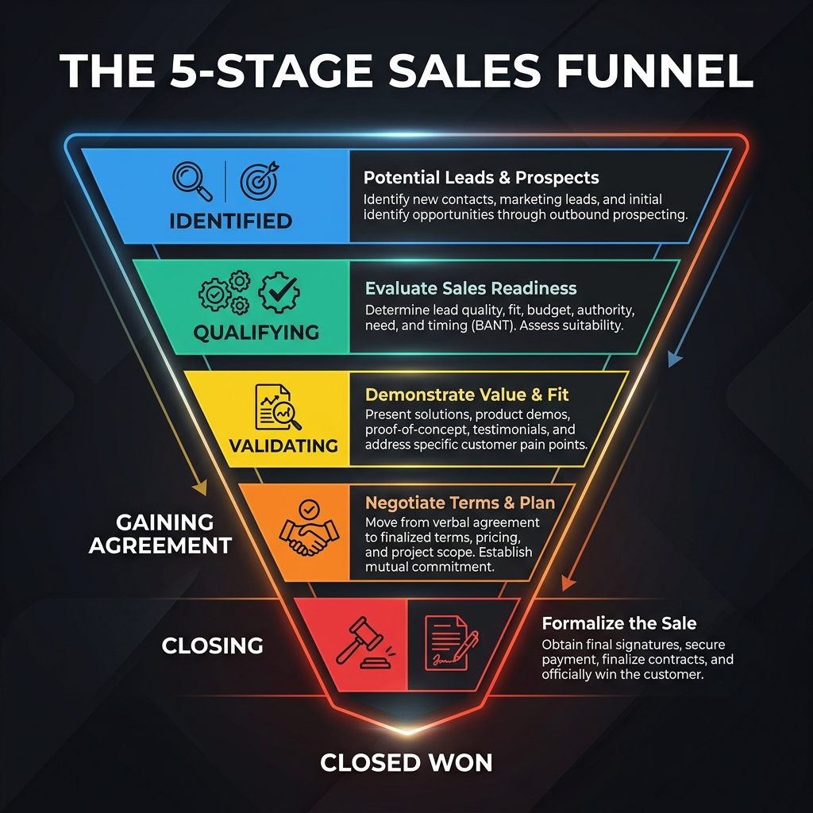
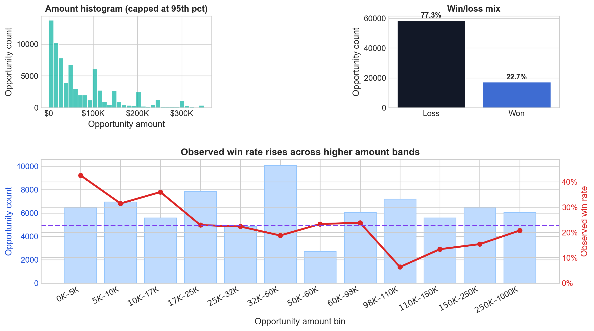
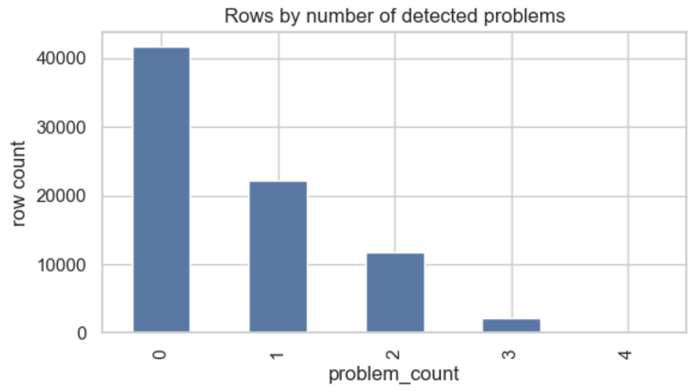
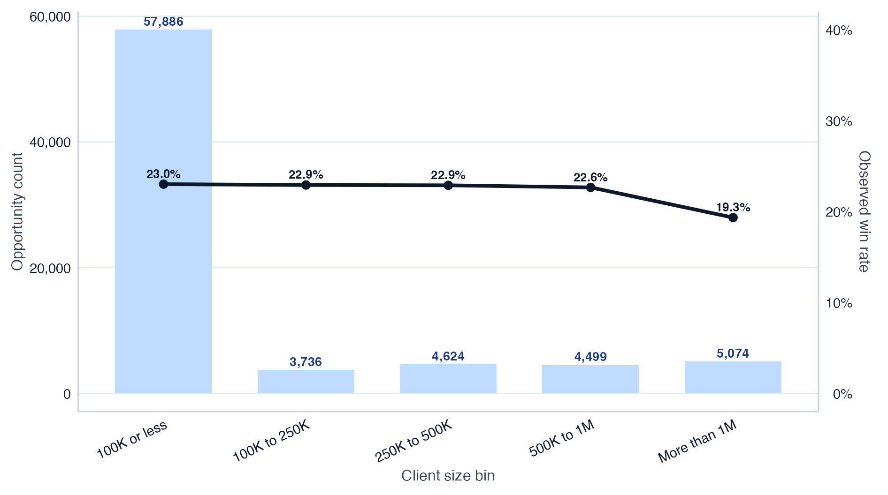
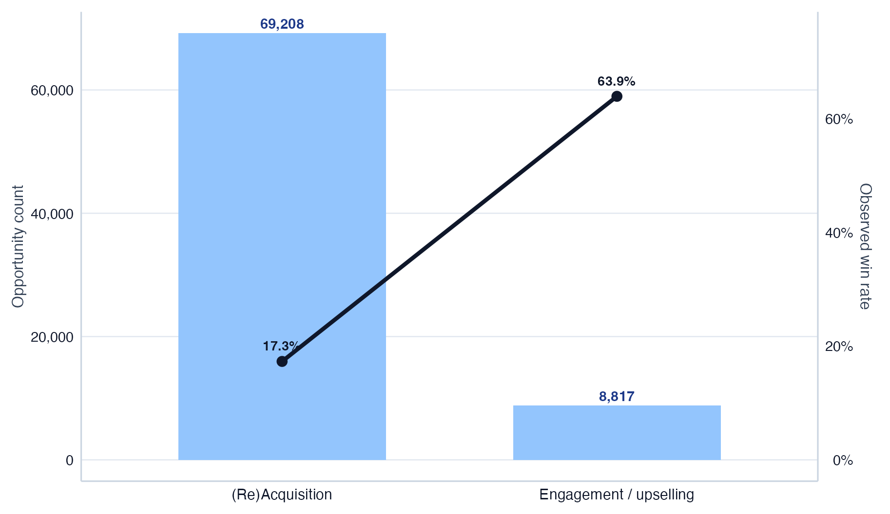
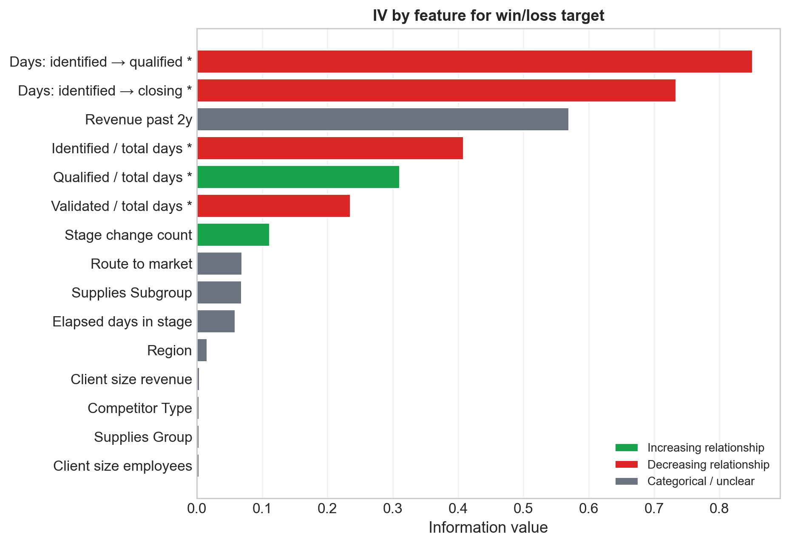
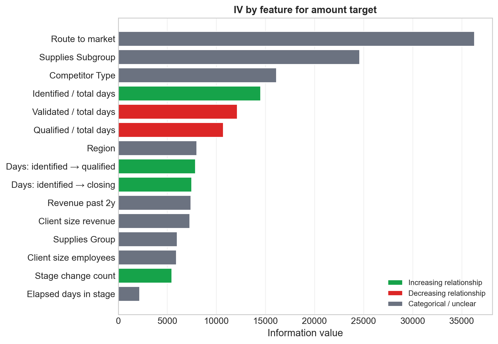
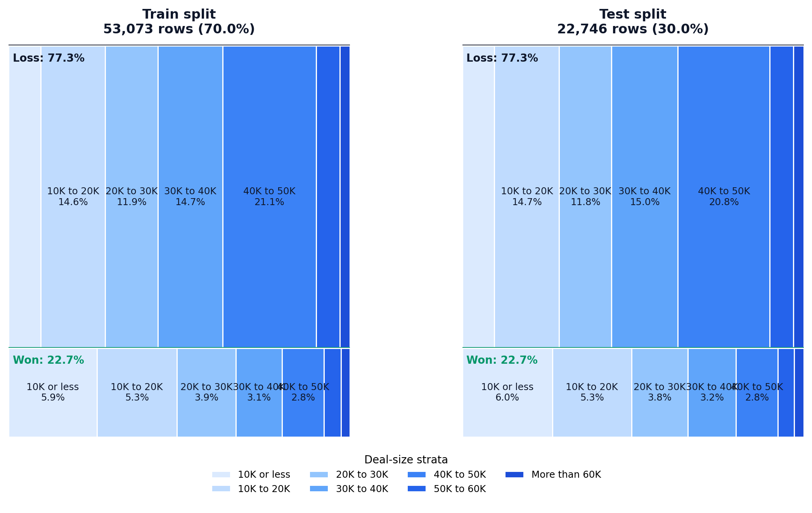
logit_binned_ohe_balanced_calibrated). [^1]| Model | Split | ROC AUC | PR AUC |
|---|---|---|---|
| Selected | CV | 0.881 | 0.698 |
| Selected | Held-out test | 0.877 | 0.693 |
| Baseline | CV | 0.502 | 0.228 |
| Baseline | Held-out test | 0.505 | 0.229 |
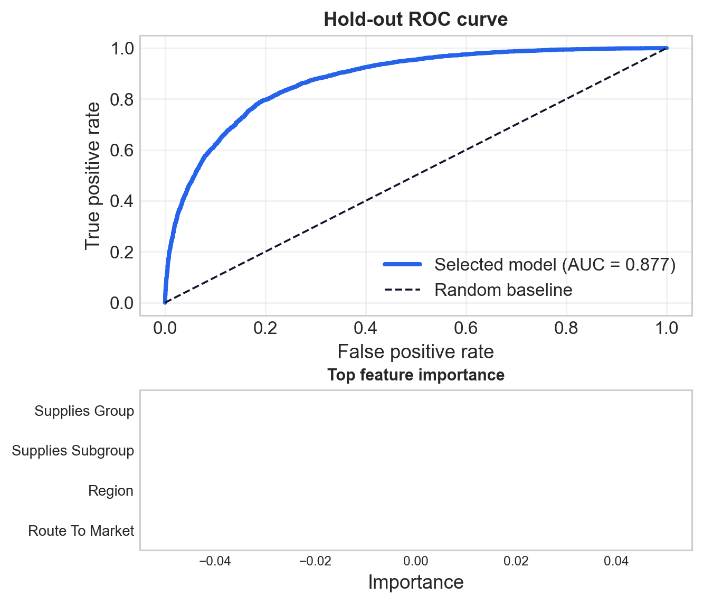
xgboost_boxcox), selected by lowest CV Median APE.CV
| Model | Split | R² | MAE | Median APE |
|---|---|---|---|---|
| Selected | CV | 0.062 | 65.1k USD | 61.7% |
| Selected | Held-out test | 0.067 | 65.0k USD | 61.5% |
| Mean baseline | CV | -0.000 | 84.9k USD | 88.3% |
| Mean baseline | Held-out test | -0.000 | 84.9k USD | 88.3% |
| Median baseline | CV | -0.108 | 75.0k USD | 74.6% |
| Median baseline | Held-out test | -0.108 | 74.9k USD | 75.0% |
| Random baseline | CV | -1.053 | 115.0k USD | 90.4% |
| Random baseline | Held-out test | -0.972 | 113.4k USD | 90.1% |
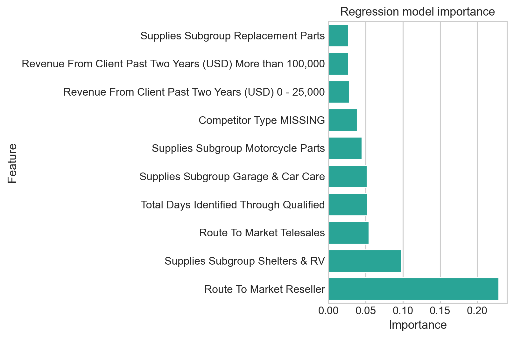
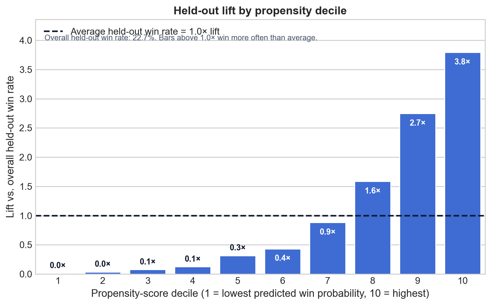
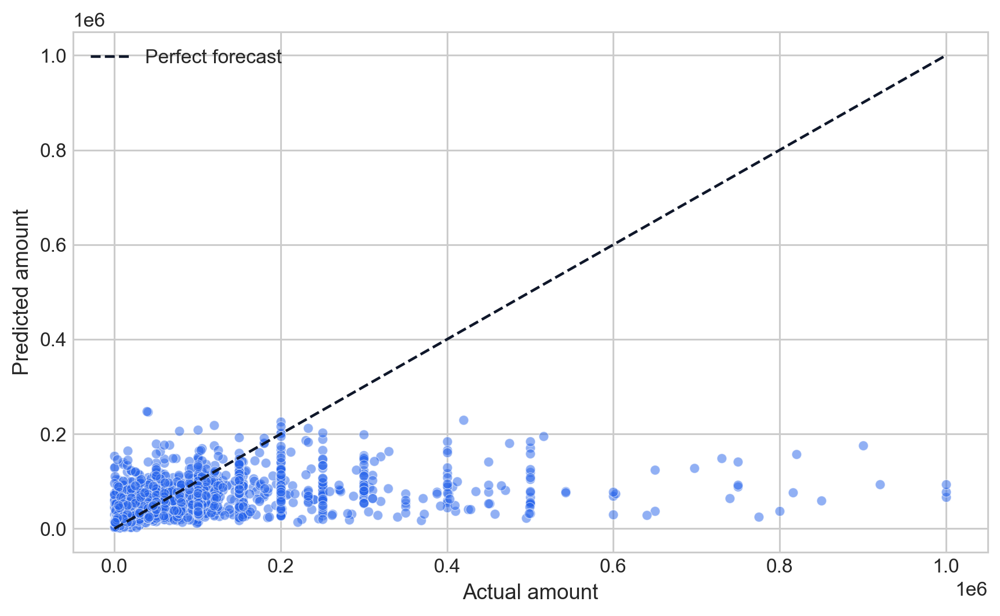
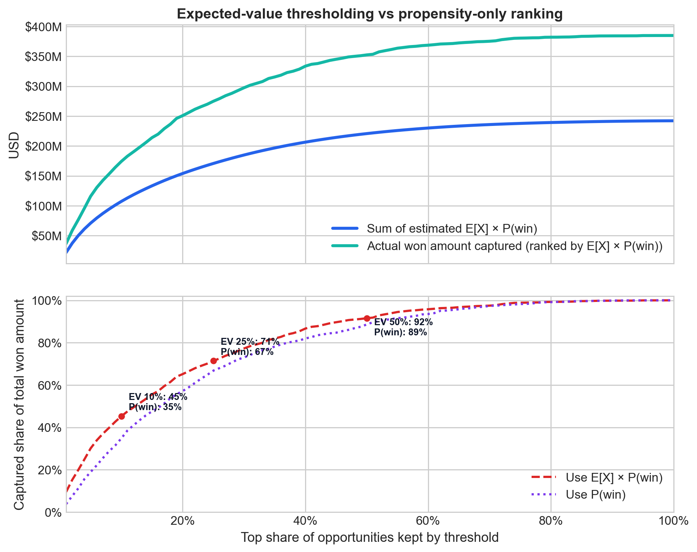
Opportunity created → score + expected value generated
Questions, comments, and feedback are welcome!
| Model | ROC AUC | PR AUC | Accuracy | F1 |
|---|---|---|---|---|
| random_forest_classifier | 0.914 ± 0.004 | 0.773 ± 0.011 | 0.847 ± 0.006 | 0.707 ± 0.010 |
| xgboost_balanced | 0.912 ± 0.003 | 0.783 ± 0.007 | 0.830 ± 0.005 | 0.691 ± 0.007 |
| xgboost | 0.912 ± 0.003 | 0.786 ± 0.006 | 0.871 ± 0.003 | 0.682 ± 0.008 |
| logit_elasticnet_binned_ohe_balanced | 0.881 ± 0.004 | 0.698 ± 0.005 | 0.794 ± 0.008 | 0.643 ± 0.011 |
| logit_binned_ohe_balanced | 0.881 ± 0.004 | 0.698 ± 0.005 | 0.794 ± 0.008 | 0.643 ± 0.010 |
| logit_binned_ohe_balanced_calibrated | 0.881 ± 0.004 | 0.698 ± 0.005 | 0.840 ± 0.003 | 0.588 ± 0.010 |
| logit_binned_ohe | 0.881 ± 0.004 | 0.700 ± 0.005 | 0.842 ± 0.003 | 0.596 ± 0.011 |
| logit_elasticnet_binned_ohe | 0.881 ± 0.004 | 0.700 ± 0.005 | 0.842 ± 0.003 | 0.594 ± 0.010 |
| logit_elastic_binned_woe_balanced | 0.877 ± 0.004 | 0.692 ± 0.003 | 0.790 ± 0.006 | 0.636 ± 0.007 |
| logit_elastic_binned_woe | 0.877 ± 0.004 | 0.693 ± 0.004 | 0.838 ± 0.002 | 0.570 ± 0.009 |
| logit_binned_woe | 0.877 ± 0.004 | 0.693 ± 0.004 | 0.838 ± 0.002 | 0.570 ± 0.008 |
| logit_elasticnet_robust_scaler_balanced | 0.868 ± 0.006 | 0.669 ± 0.011 | 0.787 ± 0.007 | 0.629 ± 0.011 |
| logit_elasticnet_robust_scaler | 0.868 ± 0.006 | 0.675 ± 0.011 | 0.828 ± 0.002 | 0.546 ± 0.008 |
| classic_logit_robust_scaler | 0.868 ± 0.006 | 0.675 ± 0.011 | 0.828 ± 0.002 | 0.547 ± 0.008 |
| random_classifier | 0.502 ± 0.002 | 0.228 ± 0.001 | 0.654 ± 0.001 | 0.227 ± 0.003 |
| always_true_classifier | 0.500 ± 0.000 | 0.227 ± 0.000 | 0.227 ± 0.000 | 0.370 ± 0.000 |
Selected model in main deck: logit_binned_ohe_balanced_calibrated.
| Model | R² | MAE (USD) | MAPE | Median APE |
|---|---|---|---|---|
| xgboost_boxcox | 0.062 ± 0.010 | 65.1k ± 1.5k | 164.1% ± 31.2% | 61.7% |
| xgboost_log1p | 0.015 ± 0.009 | 65.9k ± 1.5k | 131.3% ± 26.1% | 61.8% |
| xgboost_yeojohnson | 0.062 ± 0.010 | 65.1k ± 1.5k | 165.2% ± 32.3% | 61.8% |
| linear_power_scaler_binned_ohe | 0.043 ± 0.009 | 66.7k ± 1.4k | 180.5% ± 37.7% | 63.6% |
| classic_linear_yeojohnson_robust_scaler | 0.041 ± 0.007 | 66.8k ± 1.4k | 176.1% ± 34.3% | 63.8% |
| classic_linear_boxcox_robust_scaler | 0.041 ± 0.007 | 66.8k ± 1.4k | 176.2% ± 34.3% | 63.9% |
| classic_linear_log1p_robust_scaler | -0.006 ± 0.006 | 67.7k ± 1.5k | 148.3% ± 30.7% | 64.1% |
| median_regressor | -0.108 ± 0.002 | 75.0k ± 1.5k | 124.7% ± 28.4% | 74.6% |
| random_forest_regressor | 0.147 ± 0.009 | 72.7k ± 0.9k | 292.2% ± 65.4% | 75.5% |
| xgboost | 0.156 ± 0.008 | 72.3k ± 0.9k | 294.6% ± 54.5% | 77.8% |
| xgboost_pseudohubererror | -0.477 ± 0.012 | 92.7k ± 1.5k | 458.8% ± 94.4% | 96.9% |
| classic_linear_robust_scaler | 0.134 ± 0.006 | 74.3k ± 1.1k | 297.1% ± 54.9% | 78.9% |
| linear_binned_ohe | 0.134 ± 0.007 | 74.3k ± 1.0k | 300.4% ± 55.2% | 78.9% |
| elastic_binned_woe | 0.131 ± 0.008 | 74.3k ± 1.1k | 298.7% ± 58.7% | 79.3% |
| linear_binned_woe_robust_scaler | 0.131 ± 0.008 | 74.3k ± 1.1k | 298.7% ± 58.7% | 79.3% |
| mean_regressor | -0.000 ± 0.000 | 84.9k ± 1.3k | 235.0% ± 53.9% | 88.3% |
| random_regressor | -1.053 ± 0.057 | 115.0k ± 2.1k | 164.1% ± 65.3% | 90.4% |
| elasticnet_robust_scaler | 0.066 ± 0.003 | 79.7k ± 1.3k | 260.6% ± 58.1% | 97.6% |
Selected model in main deck: xgboost_boxcox by CV Median APE, tie-broken by MAE.
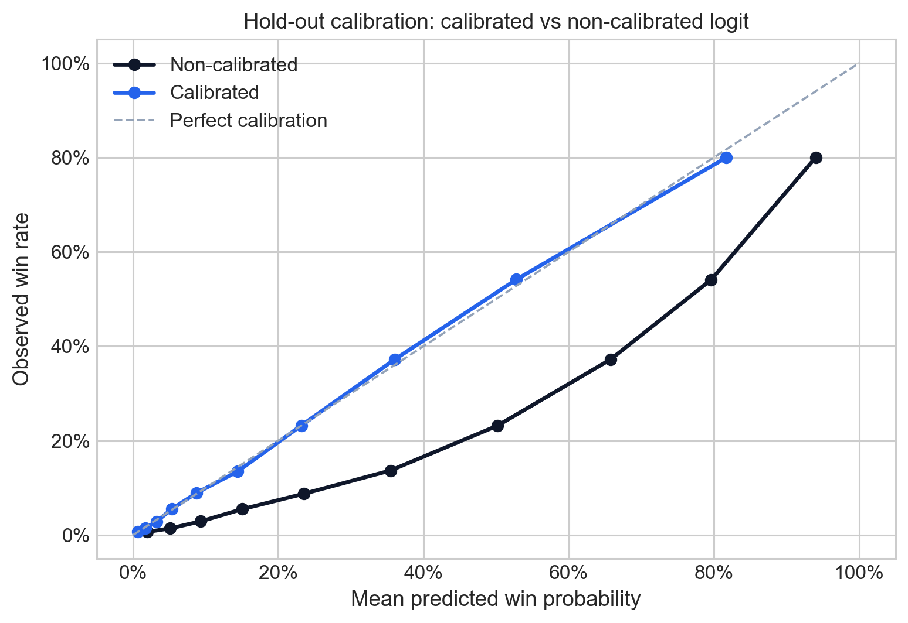
Threshold chosen on training out-of-fold predictions by maximizing F1 for the selected model: 31.4% predicted win probability.
| Model | Threshold | Accuracy | Precision | Recall | F1 |
|---|---|---|---|---|---|
| Selected @ optimal threshold | 31.4% | 82.0% | 58.4% | 72.2% | 64.6% |
| Random classifier | n/a | 65.1% | 23.5% | 23.6% | 23.5% |
| Always true | n/a | 22.7% | 22.7% | 100.0% | 37.0% |
| Model | TN | FP | FN | TP |
|---|---|---|---|---|
| Selected @ optimal threshold | 14,917 | 2,659 | 1,436 | 3,734 |
| Random classifier | 13,597 | 3,979 | 3,951 | 1,219 |
| Always true | 0 | 17,576 | 0 | 5,170 |
Diagnostic note: the threshold is selected on train-side OOF predictions, then evaluated once on the untouched hold-out set shown here.
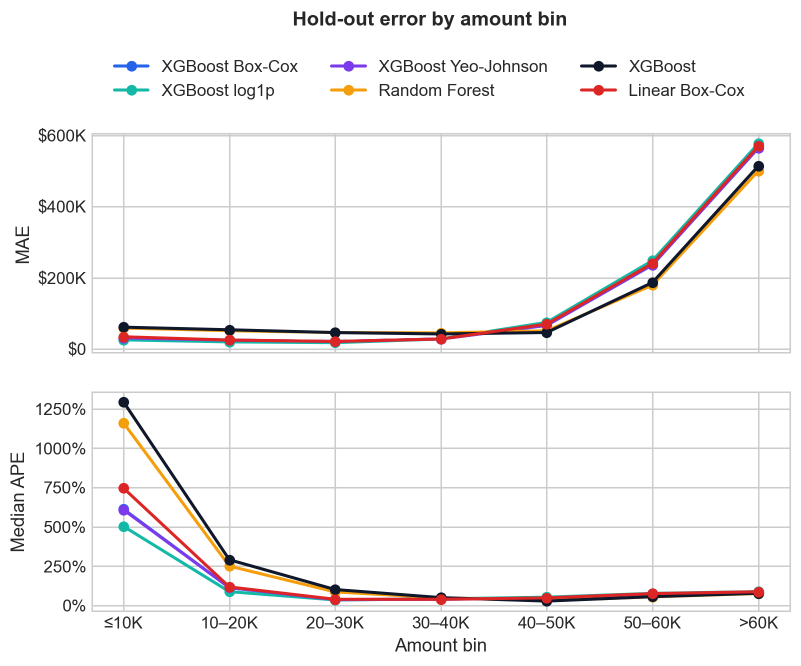
Baseline conversion across the hold-out set: overall win rate = 22.7%.
Expected-value ranking (predicted win probability × predicted amount)
| Top slice kept | Opportunities | Forecasted amount inside slice | Segment win rate | Win-rate lift vs overall | Win-rate bonus (base) | Incremental revenue (conservative) | Incremental revenue (base) |
|---|---|---|---|---|---|---|---|
| 10% | 2,275 | 187.3M | 63.3% | 40.6 pts | 12.2 pts | 15.2M | 22.8M |
| 25% | 5,686 | 361.8M | 53.0% | 30.3 pts | 9.1 pts | 21.9M | 32.9M |
| 50% | 11,373 | 664.4M | 39.6% | 16.9 pts | 5.1 pts | 22.4M | 33.7M |
Probability-only ranking (y_proba)
| Top slice kept | Opportunities | Forecasted amount inside slice | Segment win rate | Win-rate lift vs overall | Win-rate bonus (base) | Incremental revenue (conservative) | Incremental revenue (base) |
|---|---|---|---|---|---|---|---|
| 10% | 2,275 | 98.9M | 80.0% | 57.2 pts | 17.2 pts | 11.3M | 17.0M |
| 25% | 5,686 | 248.6M | 61.4% | 38.7 pts | 11.6 pts | 19.2M | 28.8M |
| 50% | 11,373 | 542.0M | 41.6% | 18.9 pts | 5.7 pts | 20.4M | 30.7M |
λ = 0.3), because the top slice still concentrates much more forecasted value even though its win rate is lower than the probability-only slice.Interpretation note: this is still a scenario-sizing exercise, but it is now closer to an operational story: ranking uses forecasted amount, and the intervention is modeled as an additive improvement in segment win rate rather than a multiplicative probability shock.
Translate that conversion lift into a revenue estimate by assuming sales action adds a win-rate bonus to the selected segment.
The bonus is defined as a fraction of the observed conversion lift:
Incremental revenue is then estimated as:
forecasted amount inside the slice × win-rate bonus
This is a sizing heuristic, not a causal estimate:
MIB Cars Analysis